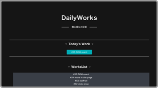
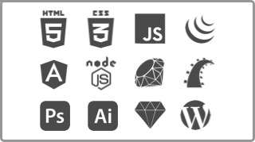

「継続は力なり」をコンセプトに、書いたコードをGitHubに毎日アップしています。その他の作品については、Worksページをご覧下さい。 
スキルセットの紹介。まだまだ勉強中のものも多いですが、勉強会に参加するなどして、日々スキルアップに励んでます。 
1989年生まれ。大阪出身。 現在は、東京のSI企業でSEをしています。 仕事では、変わった言語を使用しています。 そのため、Web関連やデザインの技術は個人で勉強しています。 作りたいアプリがあり、2015年12月からプログラミングを本腰入れて始めました。 特にフロントエンドに興味があります。 人が操作する部分を開発できることが魅力的です。とても面白いです。 使った人が気持ち良く使えるような、 UI/UXの作れるようになりたいです。 好きなことは、 音楽(聴くのも、演奏するのも)・漫画 好きな言葉は、 「遅刻でもいいから行こうかな」